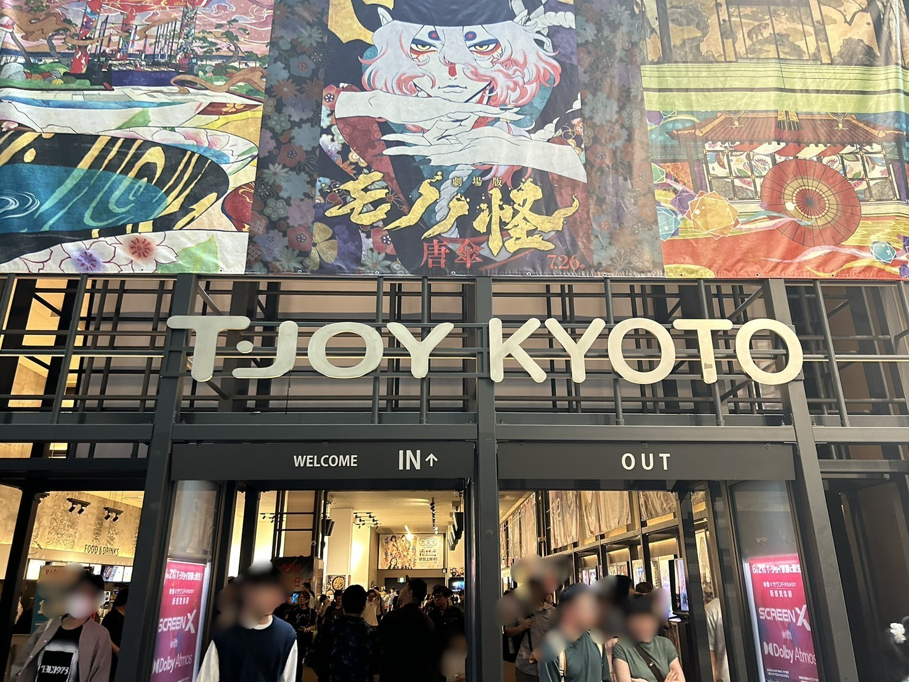
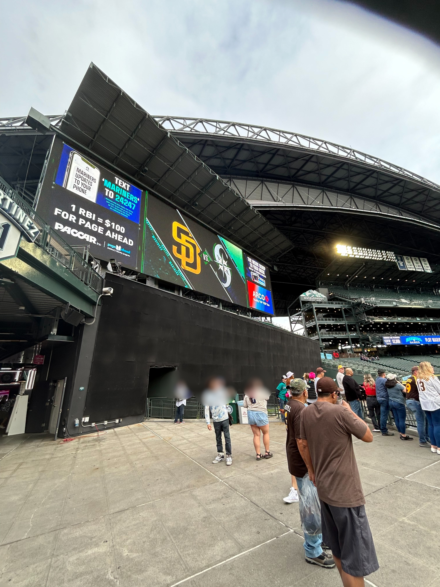
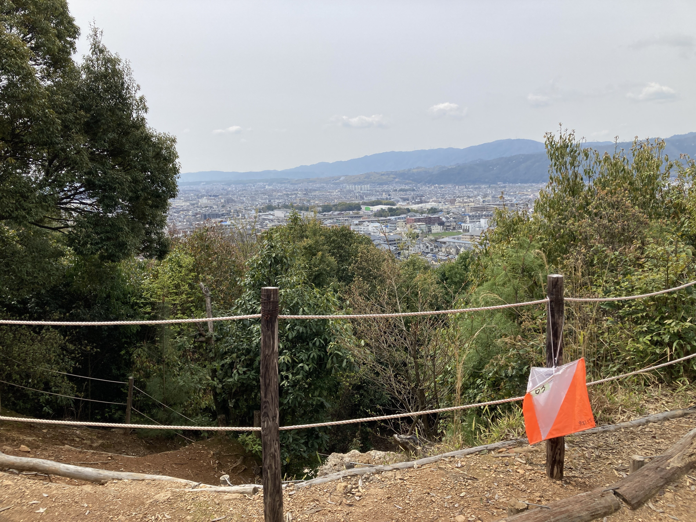

Profile
About
Research
Research Interests
I study broadly, from economics to machine learning.
Causal Inference
Spatial Economics
Machine Learning
Work
Papers & Projects
Staged Continual Adaptation of Multimodal Foundation Models for Japanese Financial Documents
A project on fine-tuning the large language model llm-jp4 using a Japanese financial dataset. Co-authored with AtsushiYanaigsawa768.
Future Work
Research Notes
Credentials
Certifications
TOEIC 915September 2023
Data Scientist Certification - Literacy LevelMarch 2024
EIKEN Pre-1September 2022
Statistics Certification Pre-1February 2026
Outside Research
Hobbies


